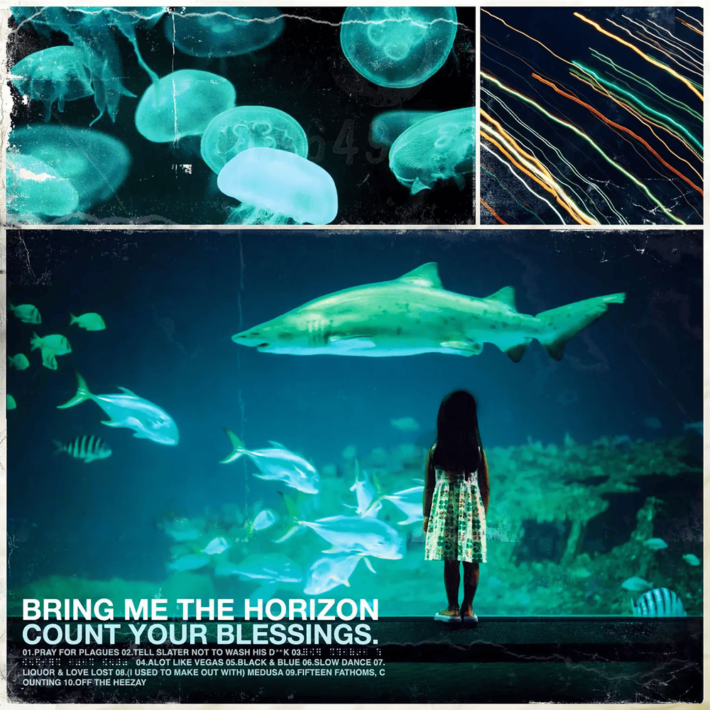
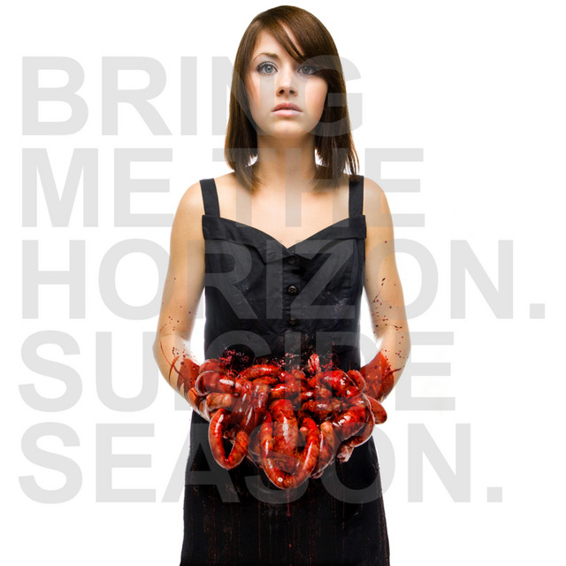
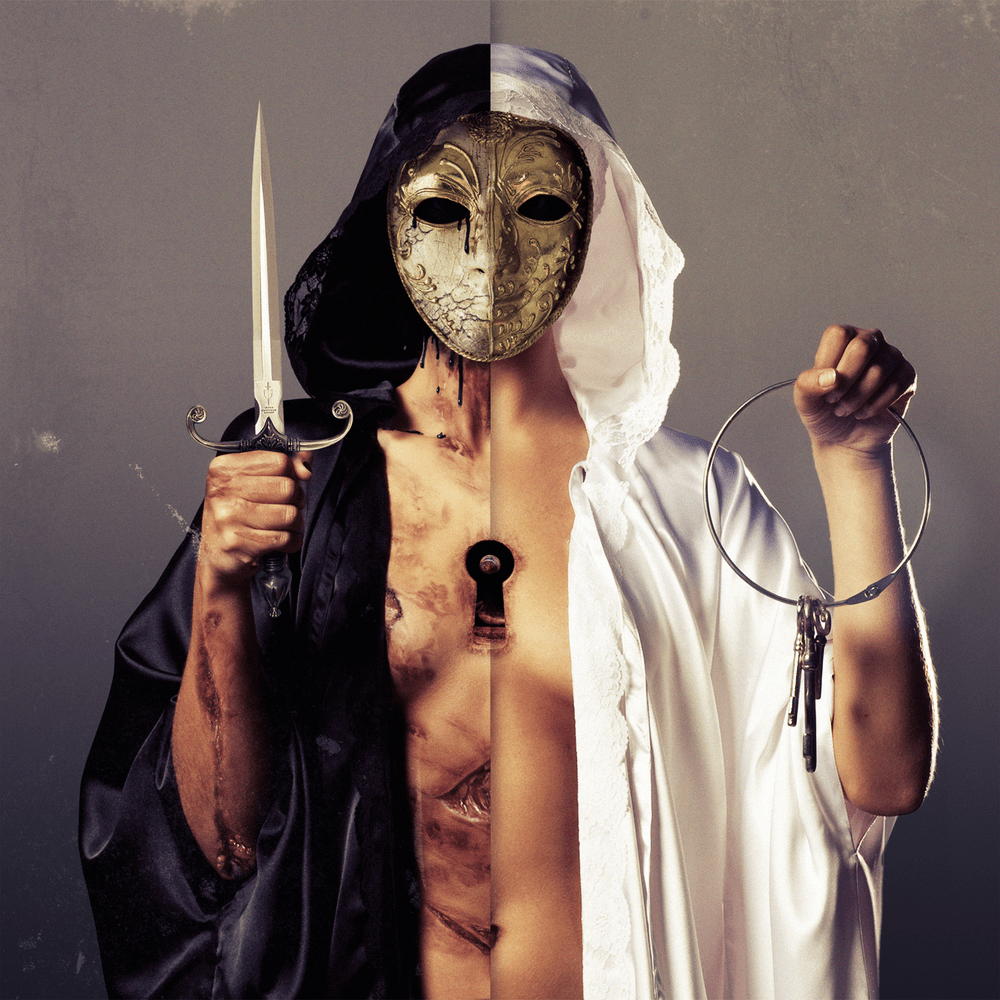
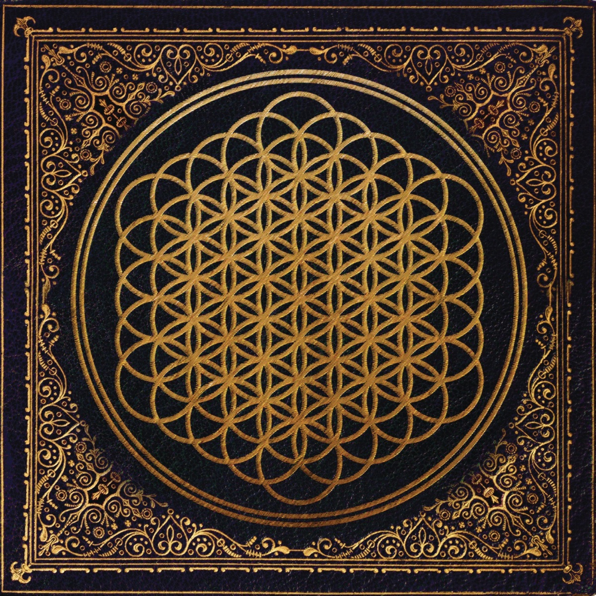
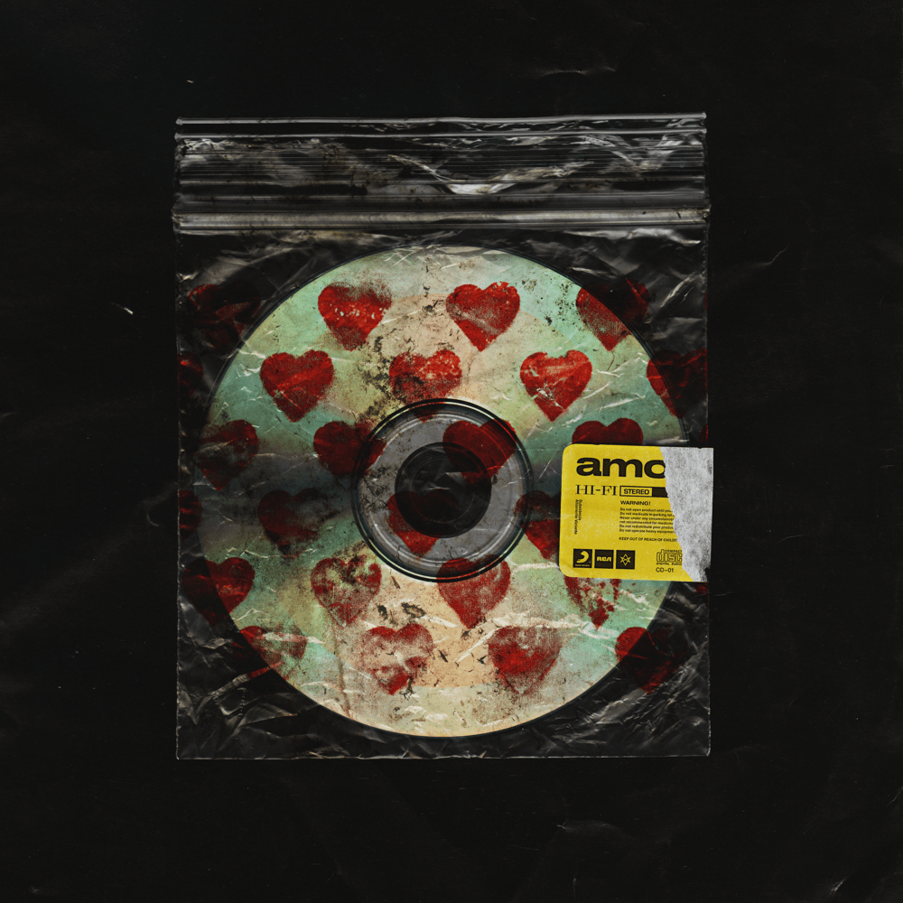
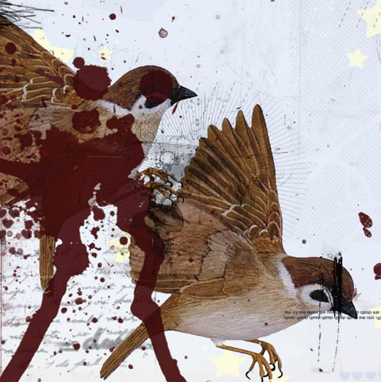
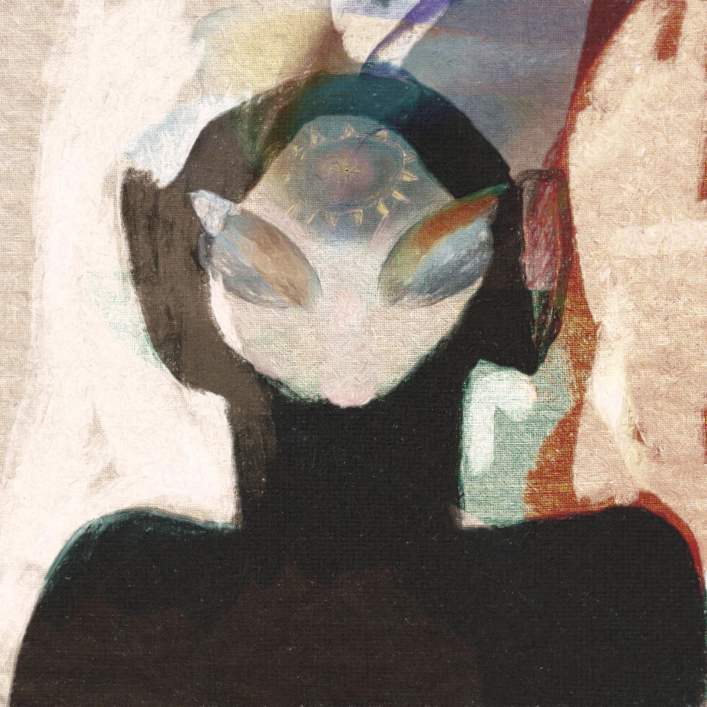
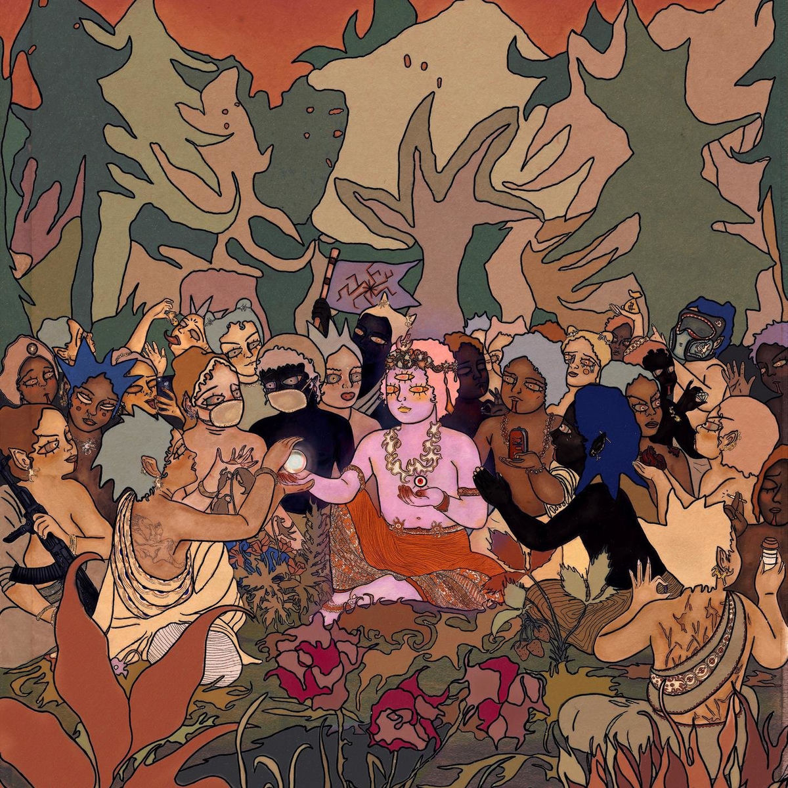
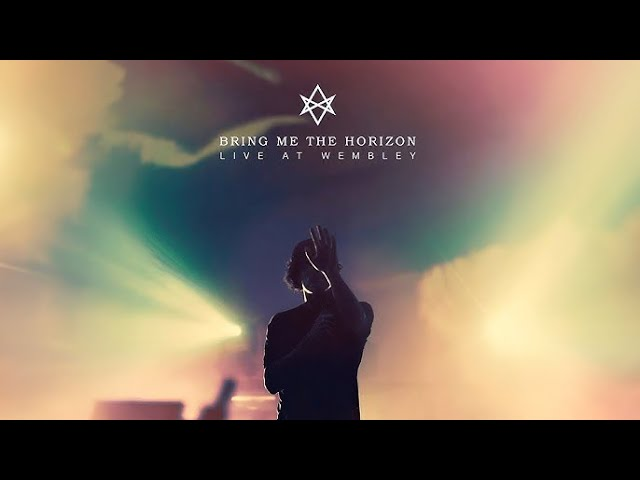
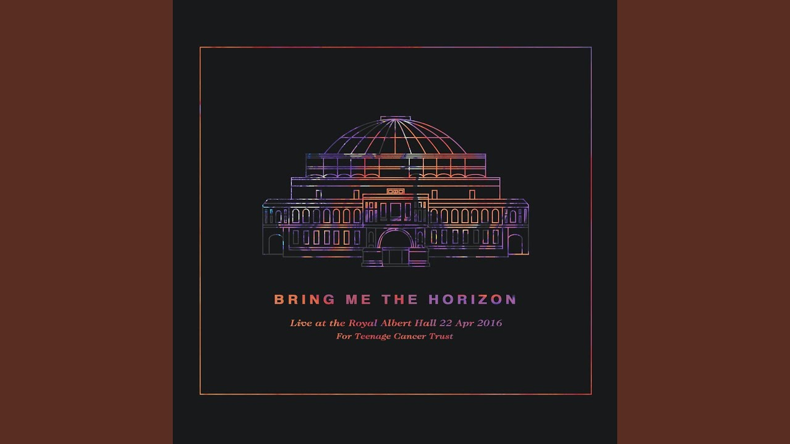

Complete Discography
Studio Albums

Count Your Blessings
The debut full-length studio album. A chaotic, heavy deathcore record that gained the band notoriety and a massive underground following in the UK metal scene.

Suicide Season
A major turning point. The band shifted from deathcore to a more structured metalcore sound, incorporating electronic elements and cleaner production, expanding their global reach.

There Is a Hell Believe Me I've Seen It...
An ambitious project pushing the boundaries of metalcore with symphonic strings, choirs, and advanced electronic programming. Features collaborations with Lights and Skrillex.

Sempiternal
The critical breakthrough. With the addition of Jordan Fish, the band mastered their signature blend of heavy riffs and atmospheric electronics. Features anthems like "Can You Feel My Heart".
That's the Spirit
A departure from metalcore into alternative rock, nu-metal, and pop-rock. Self-produced by the band, it propelled them to arena-headlining status with tracks like "Throne" and "Drown".

amo
Their most genre-defying record. A Number 1 album in the UK that freely mixed pop, electronic, trap, and heavy rock elements, securing them their first Grammy nominations.
EPs & Experimental Releases

This Is What the Edge of Your Seat Was Made For
The debut EP that started it all. Four tracks of raw, unpolished deathcore recorded in a bedroom setting.

Music to listen to~dance to~blaze to~pray to...
A surprise release. An experimental, ambient, and electro-pop project featuring heavily remixed stems from the 'amo' recording sessions. Contains collaborations with Halsey and Yonaka.

POST HUMAN: Survival Horror
Phase one of the POST HUMAN series. A return to a heavier, apocalyptic nu-metal and metalcore sound mixed with Mick Gordon-inspired synths. Features BABYMETAL and Yungblud.
POST HUMAN: NeX GEn
Phase two of the POST HUMAN project. Explores hyperpop, 2000s emo, and post-hardcore aesthetics in a sprawling, narrative-driven concept record.
Live Albums

Live at Wembley
Audio and video capture of the band's landmark sold-out performance at the SSE Arena, Wembley in London during the Sempiternal era.

Live at the Royal Albert Hall
A special charity concert benefiting Teenage Cancer Trust, featuring the band performing alongside the Parallax Orchestra and a full choir.